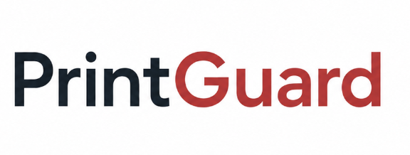

Backend Developer + Database Engineer / Designer | 2026
PrintGuard
A multi-camera 3D-print monitoring platform with backend foundations for AI defect detection and direct printer control.

Project Description
PrintGuard is designed to watch live camera feeds for failures such as spaghetti, warping, stringing, and detachment, notify operators, and send G-code commands to an affected printer over USB serial.
The current prototype combines a Next.js frontend, FastAPI backend, Supabase database and authentication layer, multi-source OpenCV streaming, station management, and pyserial printer controls. Its analysis and guard endpoints expose the intended YOLOv8 boundary, while live model inference and detection-triggered incident handling remain in progress.
The backend treats cameras, stations, organizations, notifications, and printer commands as separate responsibilities. This prepares the system to add inference workers without coupling model execution to the request lifecycle.
Tech Stack
- Frontend: Next.js and TypeScript.
- Backend: FastAPI, OpenCV, and pyserial.
- Database and authentication: Supabase PostgreSQL with Row Level Security.
- Computer vision target: YOLOv8 with Ultralytics and PyTorch.
Backend Architecture
The FastAPI service normalizes local webcams, RTSP streams, and HTTP MJPEG feeds into stable source keys. A camera manager owns capture-worker lifecycles, while a station layer binds each printer to one or more camera sources, a default view, and an optional serial port.
- Video endpoints expose source discovery, network-source registration, JPEG snapshots, MJPEG streams, saved preferences, and batch frame analysis.
- Station APIs validate multi-camera assignments and provide printer-scoped stream, snapshot, pause, and stop operations.
- Supabase JWT validation and organization-membership checks protect camera and station resources when authentication is configured.
- pyserial endpoints discover connected ports and send G-code directly to a configured printer, including pause and emergency-stop commands.
- Notification startup is camera-gated and uses deduplication controls before sending account-linked email alerts.